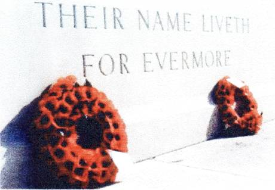
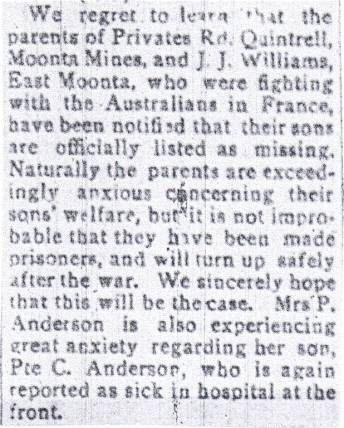
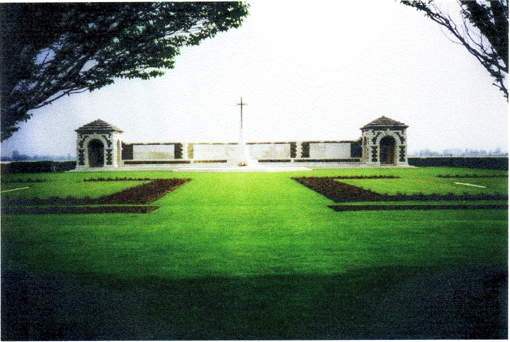

On
the War Memorial in Moonta are the names of four Quintrell men. Three
of them were brothers - the sons of Mary Ann Quintrell of Moonta Mines
and Stephen Quintrell who died in 1913. Stephen and Mary Ann had 7
sons and 6 daughters.
The
two first-born sons died in infancy and the third, Stephen
William,
was well over 40 when the Great War began. The fourth son also died
when he was less than 2 years old. Their three youngest sons all
fought on the Western Front - none of them returned to Australia. In
referring to her sons Mary Ann apparently did not count those who died
as babies. Clarence was referred to as the second son but he was
actually the fifth.
Clarence
Horace, the oldest of the three soldiers, was the first to enlist in
the A.I F - on the 9th of October 1915. On the 30t" of
December 1915 both his younger brothers, John Adolphus and
Richard Hugh, enlisted. When they enlisted only John gave his correct age.
Clarence understated his age by a year while Richard pretended to be 4
years younger than he really was.
The
first to die was Richard. He was involved in the tragic battle at
Fromelles. He was at first declared missing but later it was
officially decided that he died on July the 20" 1916. Less than a
month later on August the 16th Clarence Horace was killed at Mouquet
Farm. John Adolfus died at sea on September the 15t 1917
while being repatriated to Australia.
This
then is a brief history of their part in the Great War. It begins with
Richard Hugh who, although the youngest was the first to die. If I
have dwelt on Richard's story in more detail it is because although
the battle lasted for less than 24 hours, it to me, epitomises the
mistakes, the arrogance of those in charge and the disregard for the
lives of the soldiers which characterised the offensives on the
Western Front for much of the war.
In memory of
Private
RICHARD HUGH QUINTRELL
32nd
Bn, Australian Infantry, a.i.f.
who
dies aged 34 on Thursday, 20th July 1916.
Private
QUINTRELL was the son of Stephen and Mary Ann Quintrell, of Moonta
Mines, South Australia.
Remembered
with honour
V.C.
CORNER, AUSTRALIANCEMETERY MEMORIAL,
FROMELLES,
Nord, France.

In
the perpetual care of the Commonwealth War Graves Commission
RICHARD
HUGH QUINTRELL
Richard
Hugh Quintrell was the seventh and youngest son of Mary Ann and
Stephen Quintrell. He was born on October 8th
1881.
When he enlisted in the A.I.F. on December 30th 1915 he gave his age
as 30 years and 3 months whereas he was almost 34 years and 3 months.
He gave his occupation as a moulder.
His 'description on enlistment' was
Age
30 years and 3 months (he was actually 4 years older]
Height
5 feet 2 inches
Weight
120 Ibs
Chest
measurement
33-34 inches
Complexion
Fresh
Eyes
Hazel
Hair
Brown
Religious
Denomination
Methodist
Distinctive
Marks
Scar on chest from burns
Like
all those who enlisted he had the choice of swearing that he would
'well and truly serve our Sovereign Lord the King '. He chose to sign.
OATH
TO BE TAKEN BY PERSON BEING ENLISTED.
I,
Richard Hugh Quintrell swear
that I will well and truly serve our Sovereign Lord the King in the
Australian Imperial Force from December 30, 1915 until the end of the
War, and a further period of four months thereafter unless sooner
lawfully discharged; dismissed or removed therefrom ; and that I
will resist His Majesty's enemies and cause His Majesty's peace to be
kept and maintained; and that I will in all matters appertaining to my
service, faithfully discharge my duty according to law.
SO
HELP
ME
GOD.
Signature
of Person Enlisfed,
Taken
and subscribed at ADELAIDE
in
the State of.SOUTH AUSTRALIA.
this
DEC 30, 1915 day. before
me-
'
A
person enlisting who objects to taking an oath
n,ay make an
affirmation in accordance with the Third Schedule of the Act and the
above farm most be amended accordingly. A11
amendments n:ust be initialled
by the Attesting Officer.
On
his enlistment in Adelaide he was appointed to B Coy 2"d
Depot Battalion on 6-1-1916. On 16-1-16 he was appointed to B Coy 1st
Depot Battalion. He
left Adelaide
for Egypt on H.M.A.T. A 68 'Anchises' on 30-3-1916. On 22-4-1916 he
was attached to the 32nd Battalion where he was 'taken on strength'
(supernumerary) on May 16th. The next day he was 'absorbed on
strength'.
After training in Egypt for about 2 months he left Alexandria on June
17th 1916 on H.M.T. Transylvania to join the B.E.F. (British
Expeditionary Force). After 6 days crossing the Mediterranean Sea he
landed at Marseilles and, with the rest of the 32nd Battalion,
journeyed northwards to join the Australian 5th
Division.
The 32nd Battalion, which was part of the 8th Brigade, was made up of
men from South Australia and Western Australia. (His brother John was
also to become a member of the 32"d Battalion , but
not until after Richard died.)
Less
than a month after arriving in France, and in the very first major
action involving Australian troops on the Western Front, Richard
Quintrell was reported as 'missing in action'. He lost his life in an
ill-conceived attack on the Germans near Fromelles which is a small
village a short distance south of Armentieres. He was one of 5533
Australian casualties in the attack which was carried out in the early
evening and night of July the 19th and 20th 1916. It was
one of the lesser known disasters to befall the Australians in the
Great War but one which decimated the 5th Division.
In
1916 the Battle of the Somme, which began at the beginning of July,
was not progressing as well as the British had hoped and, to deter the
Germans from transferring more men to the Somme, senior British
strategists suggested a show of strength elsewhere. The Commander of
the British XI Corps was 54 year old Sir Richard Haking who had been
advocating an assault in the Fromelles area for some weeks. Despite
flaws in his philosophy on military tactics he kept getting promoted.
(He was a friend of the British Commander- in Chief, Sir Douglas Haig.)
Haking was already known as 'Butcher Haking'. His promotions brought
him into contact with Philip Game, a senior British officer who later
became Governor of New South Wales. (He dismissed Premier Jack Lang in
1932). Game described Haking as 'a vindictive bully' and 'really
impossible, untruthful, and a bully, and not to be trusted'.
The
plan was a combined attack by the Australian 5th Division and the
British 61st Division. The commander of the Australian 15th
A.I.F. Brigade, which was positioned between the 14th A.I.F. Brigade
and the 184th British Brigade, was Brigadier General Harold 'Pompey'
Elliott who was regarded as a highly capable tactician. He was amazed
that his men would be taking part in a full scale assault since they
had arrived at the front only a few days earlier and had not had time
to familiarize themselves with their surroundings or learn about
European style trench warfare. Opposite Elliott's men was a formidable
German stronghold known as the Sugarloaf. It was an elevated concrete
bastion with many machine guns.
Elliott
was convinced that the plan for the attack was flawed
Ø
because
preparation time was inadequate
Ø
most
of the gunners were even more inexperienced than the infantry
Ø
the
distance to the German trenches (440 metres where his brigade was to
attack ) was too great, and
Ø
the
commander of the British Brigade, Brigadier General Carter, a career
soldier of ' pronounced limitations' intended to send his men through
openings, known as 'sally ports', in the front line breastworks. From
his experience in Gallipoli Elliott knew that sally ports could be too
easily blocked.

Items
such as this occurred very frequently in the
newspapers
On
the 12th
of
August 1917, 'A Court of Inquiry, Held in the Field,' was convened
by the CO of the 32nd Battalion. It was decided that Private R H
Quintrell had been killed in action on the 20th of July 1916. No doubt
this letter
was considered in making the decision.
32
Aus. Imperial Force
Quintrell, R.H. 2391, D Company
(M.
July 20/16)
Quintrell's
brother, J. Quintrell who was in the same Coy. (D) wrote to his
sweetheart in Australia that Quintrell was killed at Armentieres in
July. I did not see the casualty myself and can give no particulars
of death. His brother reported it to me. I do not know the name of
address of Quintrell's sweetheart.
Informant:
Pte E. Baker 2758
32 Aus. Imperial Force, A Coy. Ward 7, War Hospital, Bath
Home
address: c/o Bath War
Hospital
[signed]
John E George 3/2/17
On
September 22nd 1917 'the Moonta Peoples Weekly' reported that on the 10th
of
September the Rev Pemberton called on Mrs Quintrell to inform her that
her son Richard 'had made the supreme sacrifice on the field of honour'
in the previous year (Rev Pemberton was to return 2 days later with
further tragic news.)
Such
was the carnage from the battle at Fromelles that it was impossible to
bury all the dead in separate graves. So in the VC Corner Australian
Cemetery there are 410 men buried in the 2 mass graves. If Richard
Quintrell's unidentified body was found it lies in one of the graves.
If not, then his remains lie somewhere on the battlefield.

The
VC Corner Australian Cemetery. The two common graves are clearly
visible
This
is the only Commonwealth War Cemetery to have no headstones but the
back wall has the names of 1,298 Australians missing including those
from the Battle of Fromelles One of the names is Richard Hugh
Quintrell, Service No 2319 First A.I.F.